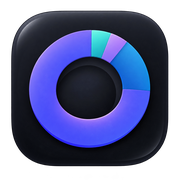

머니파이
한계
- 사례: 1996~ 일봉(FinanceDataReader·야후, GitHub Actions에서 계산). 200일선·60주선은 1990년부터의 자료로 계산함.
- 오늘 칸: 야후 일봉·현재가(뉴욕 시간). 200일선·60주선은 리로드할 때마다 그 시점 현재가를 넣어 다시 계산함.
- 이슈는 바닥까지 크게 빠진 국면만 널리 알려진 사건으로 적음(기억 기준, 기사 확인 안 함). 나머지는 비워 둠.
- 그룹별 사례 수가 적어 패턴으로 일반화하기는 어려움.